DevSecOps は DevOps 同様にセキュリティプラクティスをパイプラインで自動化する。
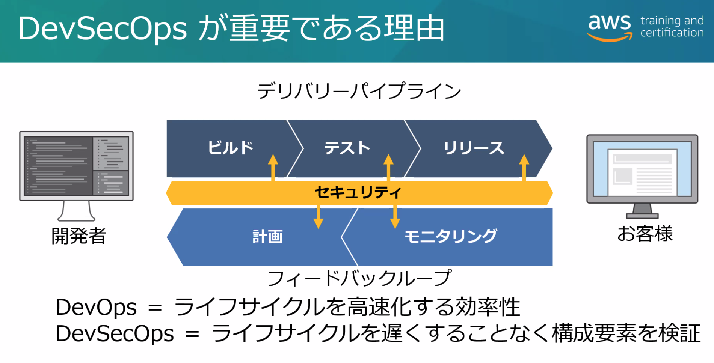
パイプライン自体のセキュリティ:
- パイプラインへのアクセス権の管理:
- 最小権限で許可するアクションとリソースを定義。
- IAM ロールを使用し、ユーザにポリシーを直接つけない。
- MFA を有効にする。
- IAM Policy Simulator によるポリシーのテスト。
- AWS Config により非準拠リソースを監査。
- 認証情報の管理
- Secrets Manager, SSM Parameter Store を使う。
- Jenkins などのビルドーサーバを保護する。
パイブライン内のセキュリティ:
- セキュリティテストの実施。
各フェーズでの実施内容の例
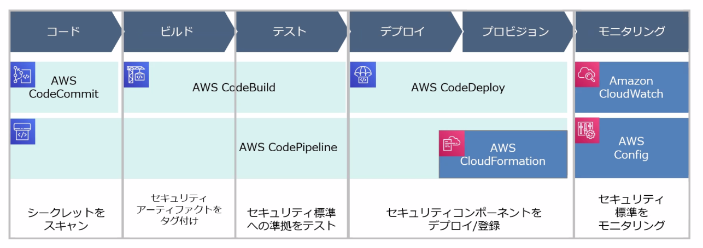
- git-secrets などでレポジトリにコミットされたシークレットをスキャン。
- アーティファクトの S3 オブジェクトにタグ付け。
- キーポリシーなどのセキュリティコンポーネントをデプロイ。
- AWS Config ルールで展開されたリソースの監査。 [[ ]]# セキュリティテスト
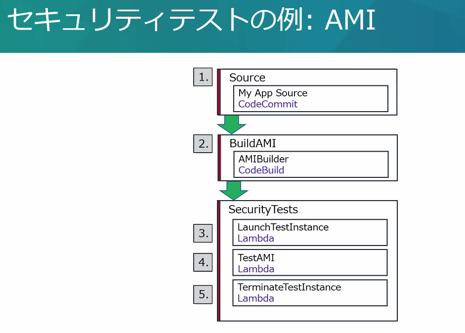
AMI をビルドする CodePipeline のセキュリティテスト例 (SecurityTests ステージ)
- Invoke アクション (Lambda) TestAMI で Amazon Inspector をトリガーして AMI をテスト
- Amazon Inspector は起動中のインスタンスをテストするので、前後にインスタンスの起動・停止を行う Invoke アクション (Lambda) を入れている
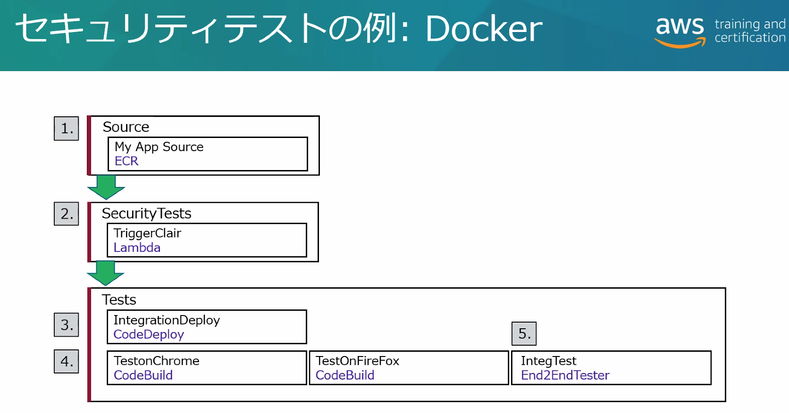
コンテナのセキュリティテスト例
- Invoke アクション (Lambda)
TriggerClairで docker コンテナの静的脆弱性スキャンツール Clair を実行。 - Clair は各コンテナレイヤーをスキャンし、CVE および Red Hat, Ubuntu, Debian の類似データベースに基づいて脆弱性を通知する。
- https://github.com/quay/clair
- https://www.redhat.com/ja/topics/containers/what-is-clair
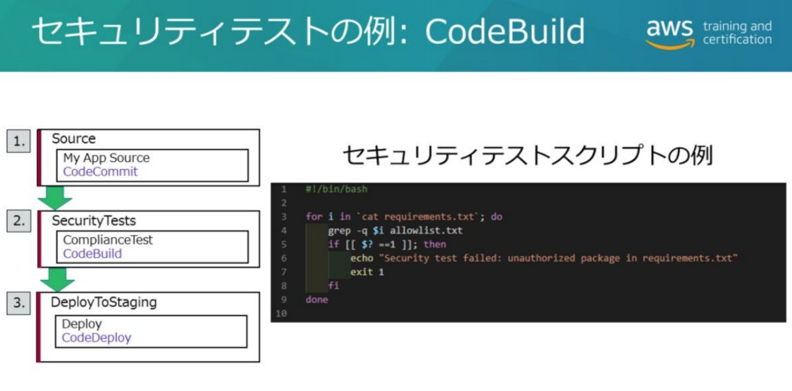
- Python の requirements.txt のモジュールのホワイトリストチェックを CodeBuild アクションで行う例。
脅威検出
Ref. AWS - Security - Governance, Incident Response
Amazon Inspector
- 起動中 EC2 インスタンス, ECS コンテナ, ECR イメージの既知の脆弱性
- アプリケーション脆弱性診断。
- apt, yum などのパッケージマネージャや Windows Installer を使用してインストールされたソフトウェアを評価。
- ネットワーク到達性診断
- オープンポートの検査。不要なサーバやセキュリティグループ誤設定によって外部から到達可能なポートのチェック。
- ルールパッケージ
- CVE (共通脆弱性識別子)
- CIS (Center for Internet Security) ... OS のセキュリティ設定ベストプラクティスのベンチマーク
- セキュリティのベストプラクティス ... SSH root ログイン無効化, パスワード複雑性, ASR/DEP 有効化など
- SNS 通知により Lambda 等で自動修復。
- エージェントレススキャン
- SSM Agent インストール不要で24時間ごとに評価。EBSスナップショットをスキャン。
- 即時性の高いスキャン・詳細なスキャンを行いたい場合は SSM Agent インストールする。
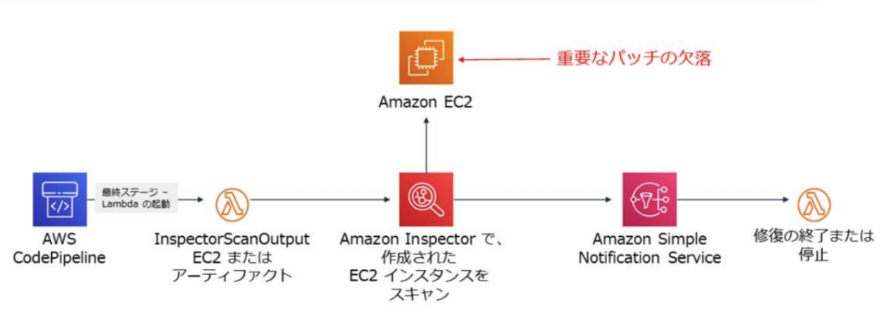
Amazon Macie
- S3 内の機密データ (PII, カード番号, 認証情報)、暗号化不備、共有状況などのリスク検出。
- S3 サーバアクセスログと CloudTrail の S3 アクセスパターンを学習およびパターンマッチング。
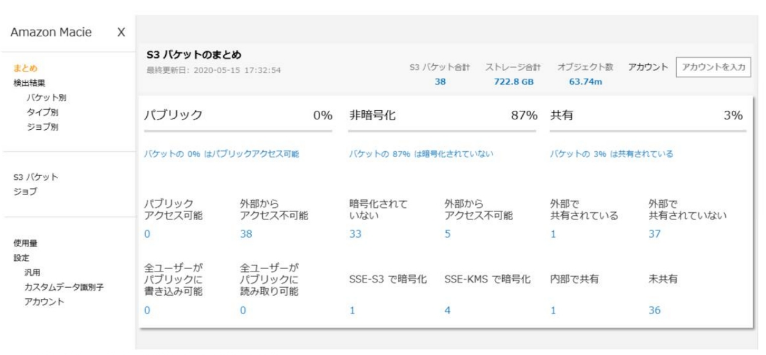
Amazon GuardDuty
- AWS アカウント全体の脅威検出サービス
- VPC フローログ、DNS ログ、CloudTrail ログのイベントを分析
- ネットワーク (VPC), インスタンス, アカウントのレベルで不正検出
- IP レピュテーション、異常検知、機械学習などによる脅威検出
- 検出は EventBridge で通知。イベント経由で Lambda によるレスポンス自動化。
検出テゴリ
- 偵察
- 異常な API アクティビティ
- 悪意のある既知の IP
- ポートスキャン
- 通常とは異なるポート
- インスタンス侵害
- RDP ブルートフォース
- 異常なトラフィック量
- ビットコインアクティビティ（暗号通貨マイニング）
- Tor ネットワーク
- DNS による不正抽出
- アカウント侵害
- 匿名化プロキシ
- 通常とは異なるリージョンでの起動
- CloudTrail の無効化
- 通常とは異なるインスタンスやインフラストラクチャの起動
AWS Security Hub
- 組織カウント横断で各種セキュリティサービスの検出結果を統合・優先順位づけしてダッシュボード表示。
- 自動のコンプライアンススキャン: AWS ベストプラクティスや CIS, PCI-DSS, AWS Config のコンフォーマンスパックのコンプライアンスチェックを継続的に実施。
- CloudWatch Events 通知とレスポンス自動化
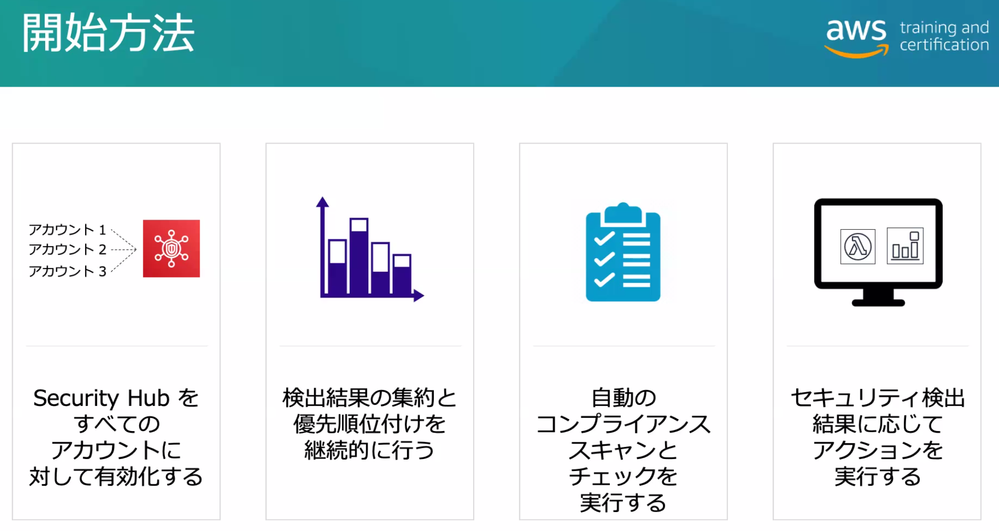
Configuration Management/構成管理
インフラストラクチャ、システム、製品の構成要素、設計に関する詳細、構築状態を、追跡・記録し、必要なときにアクセスできるようにする。
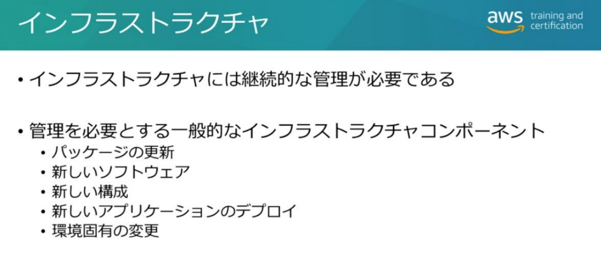
- インフラは CloudFormation で構築・管理。
- インスタンス上へのデプロイは cfn-init を UserData に設定することで構築できる。
- Systems Manager やサードパーティーツールでもデプロイ・設定できる。
- サードパーティーツール: Chef, Puppet, Ansible, Salt
AWS Config
Ref. AWS: Security: Governance, Incident Response
AWS Config - AWS リソース構成のスナップショット保存と変更履歴の管理 - スナップショットと変更履歴を S3 バケットに保存 - 変更発生時の EventBridge/SNS 通知 (オプショナル) - 構成変更の差分確認 AWS Config ルール - リソース設定のコンプライアンス状態の管理 - AWS Config で取得したリソース設定が Lambda 関数に送られてルール評価が実施される - リソースが対象なのでインスタンス内のアプリケーションなどはカバーされない。 - マネージドルール - iam-user-mfa-enabled ... MFAが有効？ - encrypted-volumes ... アタッチされたEBSが暗号化されている？ - TrustedAdvisor も一部のルールを同様に検出ができるが即時性や修復アクションの有無が大きな違い - カスタムルール (ユーザが Lambda で実装) - 修復アクション: - Config ルールに対する Noncompliant が発生した際に実行する SSM Automation アクションを設定できる - 例: EC2 インスタンスの停止等 AWS Config アグリゲーター - 中央アカウントにアグリゲーターを作成、マルチアカウント/マルチリージョンの AWS Config 情報を集約
AWS Service Catalog
Ref. AWS: Security: CloudFormation, Service Catalog, Control Tower
管理者が提供する CloudFormation テンプレート(=製品)を指定された IAM ロールとパラメータ(=制約)で、エンドユーザが自身でプロビジョンする仕組み。
管理者タスク
- Product (製品) 作成
- 実体は CloudFormation テンプレート。
- バージョン管理が可能。
- Portfolio (ポートフォリオ) 作成
- 製品の集合体（コレクション）
- 特定ユーザー、グループ、ロールに公開する管理単位。
- Control (制約)
- テンプレート制約: CloudFormation テンプレートのパラメータを制限。
- 起動制約: 製品からリソースをプロビジョニングする際に使用するロールを指定。 ユーザに CloudFormation の直接権限を与えず、Catalog 経由でのみリソース作成を許可する。
ユーザータスク
- Product List (製品リスト) からの製品の選択
- IAM によって認可された、自身が利用可能な製品の一覧。
- Launch (起動)
- リストから製品を選択し、パラメータを入力してデプロイ。
- Provisioned Products
- 起動された CloudFormation スタックの実体。
Compliance-as-Code
- コンプライアンス要件を AWS Config ルールのカスタムコードとして Lambda のコードとして定義。
- Service Catalog で製品をユーザに提供。展開された製品の CloudFormation スタックに対して AWS Config ルールによる監査を実行。
- AWS Config ルールの修復アクションとしてとして SSM Automation でドキュメント実行もできる。
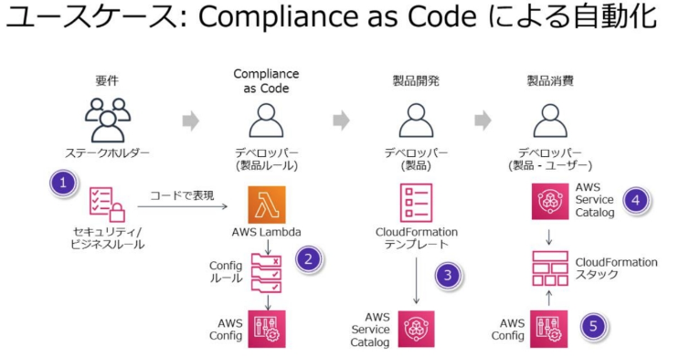
https://aws.amazon.com/jp/blogs/apn/how-to-automate-cloud-governance-to-achieve-safety-at-speed/
カスタム AMI
AMI の構成要素
- ルートボリュームのテンプレート (OS, アプリケーションなどを含む)
- 起動許可: どのアカウントでその AMI からインスタンス実行できるかを管理する
- ブロックデバイスマッピング: インスタンス作成時にアタッチするボリュームを指定する
- ルートデバイス用ストレージ種類: EBS の Snapshot-Backed または Instance Store-Backed
- AMI はリージョンリソースで、リージョンに登録する。
ゴールデン AMI
- サーバのイメージをテンプレート化する事によって、デプロイ時間の短縮や再現性を高める
- カスタムしたソフトウェアや設定を事前にインストール・定義しておける
- 最新のセキュリティパッチなど適用するため、AMI 構築は自動化する。
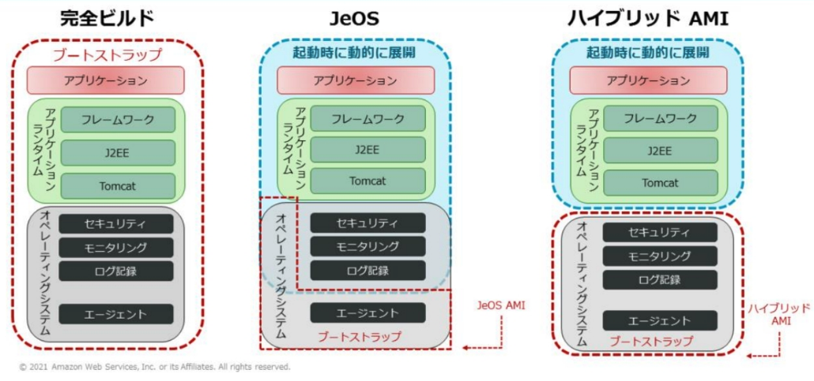
- 完全ビルド
- 全てを含む AMI
- デプロイが簡単で起動時間が高速
- JeOS (Just Enough Operating System)
- 最小限の OS と構成管理エージェントのみを含み、残りは起動時にインストール
- 柔軟性とポータビリティ
- ハイブリッド
- 完全ビルドと JeOS との中間
- 動的な変更の柔軟性と、起動速度を両立
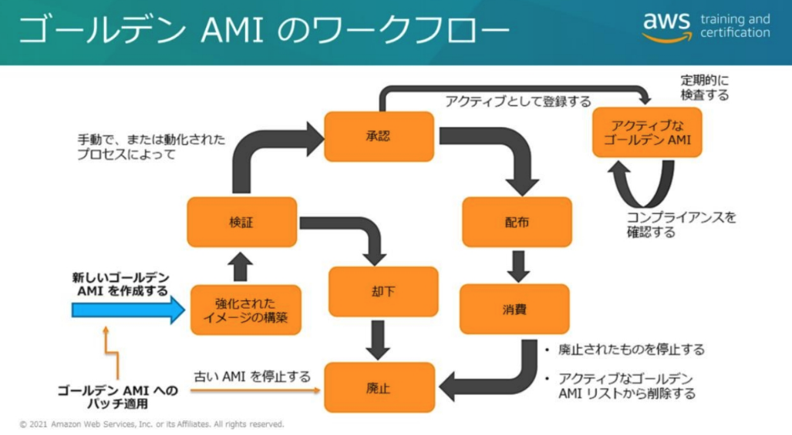
- 検証や承認のフローがある。
- 自動化は SSM Automation, CodePipline/CodeBuid や EC2 Image Builder で実装。
CI/CD パイプラインの中でゴールデン AMI を利用する例:
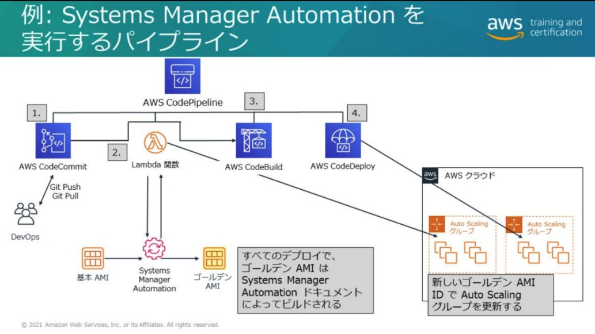
- CodePipline 中の Lambda ステップによって SSM Automation を実行してゴールデン AMI をビルドしている。
AMI 構築の SSM Automation ドキュメント (Runbook):
AWS-UpdateLinuxAmi
- Amazon Linux、Red Hat、Ubuntu、CentOS AMI のディストリ ビューションパッケージおよび Amazon ソフトウェアをすべてアップ グレードします。
AWS-UpdateWindowsAmi
- Windows アップデートをすべてインストールし、Amazon ソフト ウェアをアップグレードします
Automation Runbook で Golden AMI 作成・検証・登録などの一連のプロセスを全て行う例:
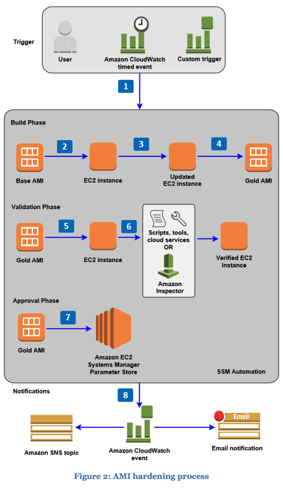
EC2 Image Builder
AWS,オンプレミス両方で使えるゴールデンイメージを作成できる。
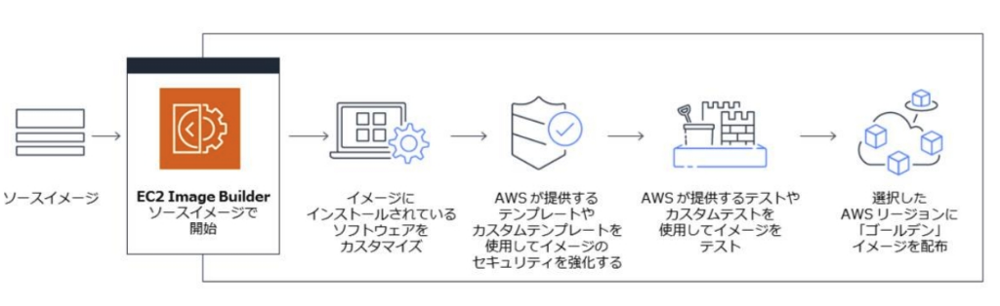
- Windows と Linux に対応。
- コード不要で GUI で自動化パイプラインを生成。
- AWS 提供の設定やカスタム設定でイメージのセキュリティ保護。
- AWS 提供のテストやカスタムテストを使用してイメージ をテスト。
- ソフトウェアの更新がある度に、自動でパイプラインが実行される。
- ソフトウェアや設定をカスタマイズ
- テンプレートを使用してセキュアなイメージにする
- イメージのテストを行う
- 選択したリージョン(複数可)にゴールデンイメージを配布する
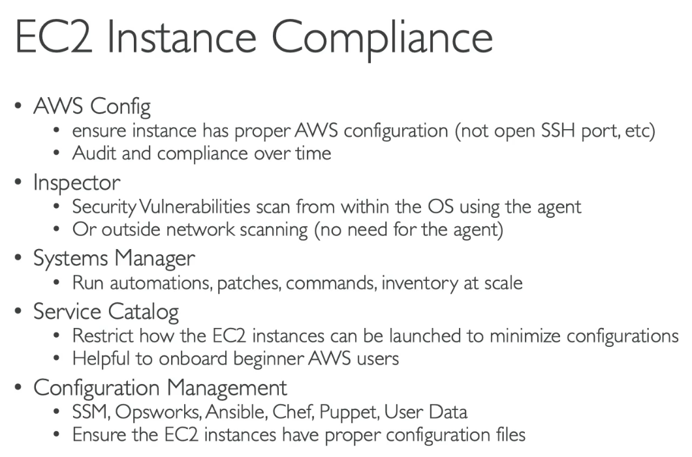